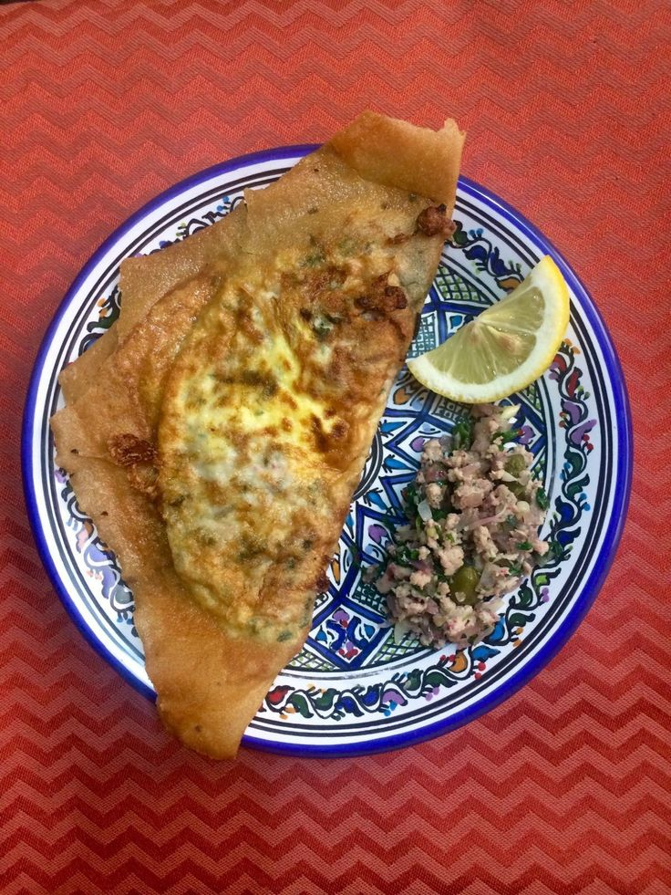
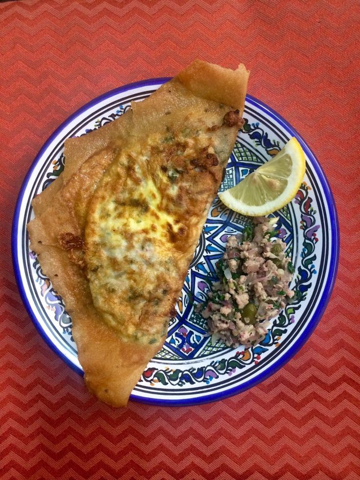

Introduction to Tunisian Cuisine
Tunisian cuisine is renowned for its diverse flavors, aromatic spices, and rich cultural influences. It blends elements of Mediterranean, Arab, Berber, and Ottoman cuisines to create unique and delicious dishes.
Popular Tunisian Dishes
- Couscous: A staple dish made from semolina grains, typically served with vegetables and meat.
- Brik: A crispy pastry filled with egg, tuna, capers, and parsley, often served as an appetizer.
- Lablabi: A hearty soup made from chickpeas, garlic, olive oil, and spices, often eaten for breakfast.
- 3eja: A flavorful stew of tomatoes, peppers, onions, and spices, often served with eggs.
- Makroudh: Sweet pastries made from semolina dough filled with dates, fried, and dipped in honey.
Tunisian Food Gallery
 
